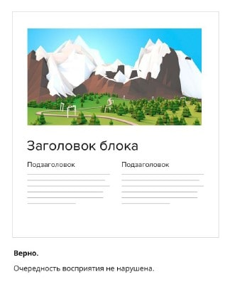
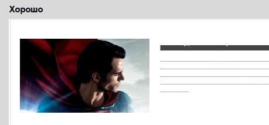
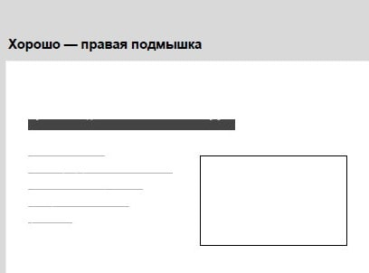
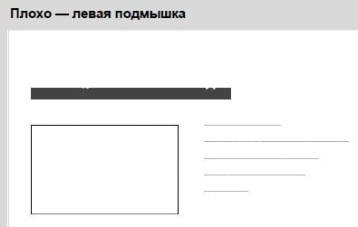
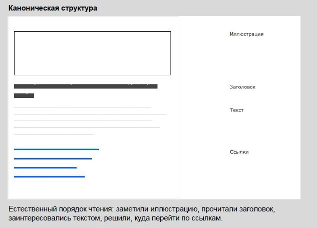
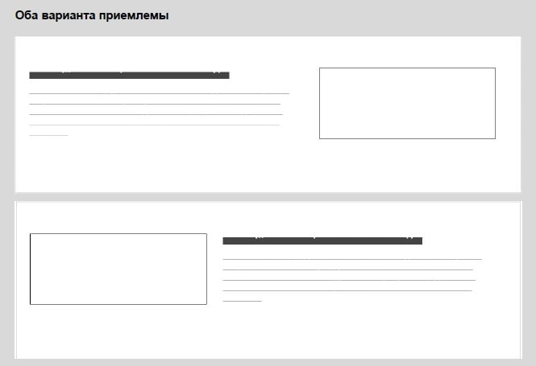

Изображения
Бесплатные
- splitshire.com
- flickr.com
- gratisography.com
- lifeofpix.com
- thestocks.im
- designspiration.net
- Google - Картинки
- Яндекс - Картинки
Платные
Фоны
- toptal.com - Текстуры
- projects.verou.me - CSS-текстуры
- olorzilla.com - Градиенты
- uigradients.com - Градиенты 2
Оптимизация
- tinypng.com - Уменьшить вес картинок
- compresspng.com - Уменьшить вес картинок 2
- cloudconvert.com - images converter
- base64 - Конвертёр img --> base64
Правильное расположение изображений
Картинка сверху, описание под ней
Взгляд должен быть на текст
"Правая подмышка" - хорошо
"Левая подмышка" - плохо (взляд прыгает)
Правильный порядок
Плитка (так можно)
В таком случае текст не должен уходить сильно вниз, должен ограничиваться картинкой (нужно ограничивать вывод текста, если он длинный).
Не должно быть строгой сетки для изображений - должны быть АКЦЕНТЫ (как вариант изображение товара, который чаще покупают, должно быть больше)
Рекомендации
Изображение должно правильно передавать ЭМОЦИИ в соответствии с тематикой сайта.
- НУЖНО СЛЕДИТЬ ЗА АВТОРСКИМИ ПРАВАМИ ФОТОГРАФИЙ
- Старайтесь выбирать фотографии хорошего качества (если фото будет пикселизированным, то это испортит общее впечатление и покажет ваш профессионализм).
- Выбирайте однозначные по смыслу, но притертые пользователям фотографии (например, если вы создаете сайт для авиакомпании, то не ищите первым делом фотографию самолета - это банально, попробуйте подобрать для поиска другие ассоциации).
- Фотография должна быть не просто красивой, она должна нести определенный смысл, который будет подкреплен текстовым блоком
- Если картинка достаточно большая или во всю ширину блока, то всё текстовое опсинание должно распологаться ПОД НЕЙ, а не над ней!
- Для фона лучше всего использовать светлый цвет (белый, светло-серый и светло-бежевый), это не позволит глазам пользователя быстро устать.
Вес картинок
- Логотипы: 0-20 KB;
- Фотографии: 70-300 KB;
- Используйте подходящий графический формат. Для больших фотографий — это JPEG
- PNG - если нужна прозрачность
- Не растрировать шрифты и png (должно быть в смарт-объекте)
Обтравка изображений в PS
- Инстремент Перо (P)
- Выделяем контур до замыкания (можно изгибать линии с помощью клавиши Ctrl, Alt)
- Окно -> Контуры -> Круглый пунктирный значок
- Проще ПКМ -> Выделить область -> Поставить радиус размытия 4-5px
- Копируем в новый слой Ctrl + J
- Обработать края ластиком по необходимости
- Исходный слой можно удалить
- Можно также использовать Ластик (Е) или Лассо (L) вместо пера
Обтравка волос (с обтравкой пером)
- Выделяем пером контур фигуры -> Выделение -> Выделение и маска (ручная настройка)
Обтравка волос (автомат. режим)
- W -> Выделить пердмет -> Alt + Выделение и маска
- Белый фон, 100% -> Уточнить края (R), +, 60 -> Обработать волосы
- Настройки экспорта -> Новый слой -> OK
Коллажирование изображений
Приём, при котором собирается одно изображение из нескольких.
- Изображения должны быть хорошо вырезаны
- Должны быть едиными по стилю
- Соблюдение размеров и пропорций
- Сохранение объёма (тени и блики). Соблюдено падение света.
- Должно быть реалистично для восприятия